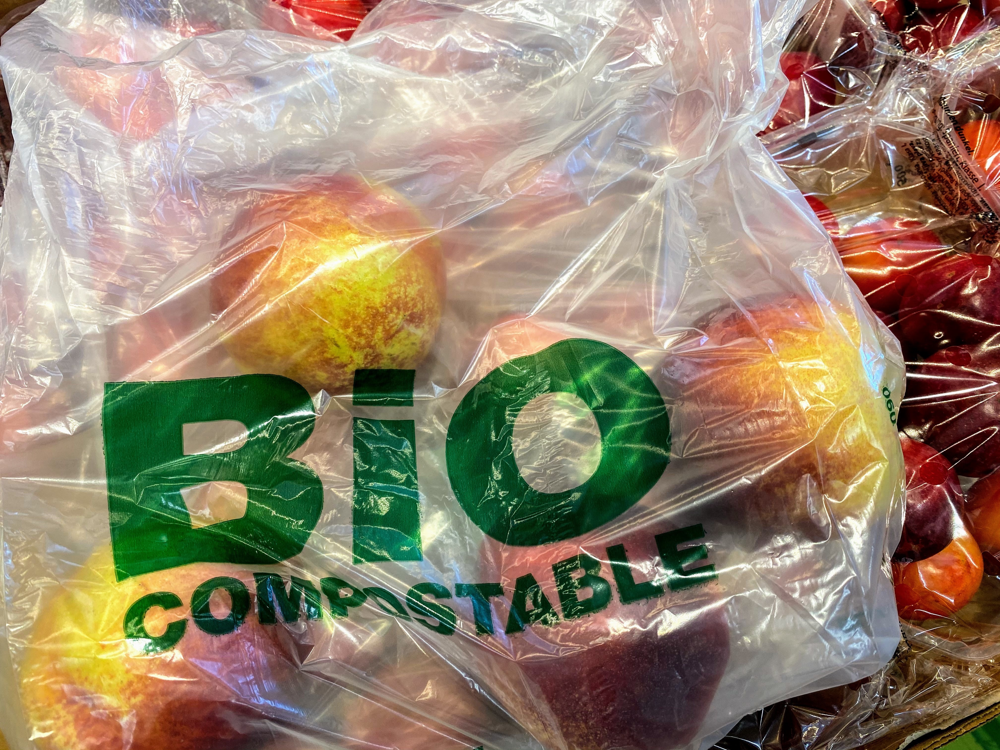

Ways To Reduce Industrial Pollution
Industrial pollution has adversely affected biodiversity for the last two centuries and continues to increase globally. The effect most closely correlated with loss of ecosystem services is toxification of environmental sites, whereby the organisms living in the ecosystem are damaged because of the poisonous nature of many pollutants. Industrial pollution takes many forms and has a negative influence on the land, water, and environment; they are also the causing factors of sickness and death around the world. Coal combustion , the combustion of fossil fuels such as petroleum, oil, natural gas, and chemical solvents used in the tanning and dyeing industries are the primary drivers of industrial pollution. As many toxicants (poisonous materials) can act even with very minimal exposure, it is almost impossible and economically infeasible to remove dissolute pollution from the environment with modern technical methods. Only spatially and temporally concentrated pollution can be retracted effectively by anthropogenic efforts, and such methods are already in use in such projects as the U.S. Superfund, a program implemented by the U.S. Environmental Protection Agency (EPA) to contain hazardous pollution and restore polluted sites.
1. Degrading Toxicants
In the case of pollution leading to buildup of toxic material, reduction of availability to the environment must be ensured to rebuild ecosystem services in a polluted area. Although physical or chemical methods such as change in acidity or absorption into the soil can help decrease the availability of chemicals, additional monitoring and securing is necessary to make sure that the pollutant is not brought back into the environment. Ideally, the system should be able to degrade the pollutant by microbes or fungi, as this will irreversibly destroy the toxicant.
2. Using Electric Vehicles Instead of Gas Vehicles
It’s not only power plants that significantly contribute to air pollution but also vehicles. Vehicles, in fact, exceeds the number of pollutants that manufacturing industries produce. Motor vehicles release carbon monoxide, particulate matter, nitrogen oxides, and many other gaseous contaminants in the air, all of which can negatively affect human health. Using electric vehicles instead of regular ones would mean a decrease in the emission of air pollutants, especially greenhouse gases. How are electric cars air-friendly? It’s because they only release one-third of greenhouse emissions compared to the amount that gas vehicles release. Electric cars don’t have tailpipes to release air pollution from. They can be charged via the grid, but they release zero emissions when charged using solar power or wind energy.
3. Stringent Government Action
Government agencies such as the Environmental Protection Agency must be allowed to take stringent action against defaulters and corporations that flout the rules laid down by such agencies.Some of the NGOs and agencies working for the same are:
i)Climate Conservations
ii)Tropical Research and Development Center (TRDC)
iii)SankalpTaru Foundation
iv)Chintan Environmental Research and Action Group
v)Institution of Environmental Sciences etc.
4. Support forest fire restoration
And finally, supporting forest fire restoration in areas that have experienced fires in the past is a key strategy for helping to prevent and/or reduce future fires. These projects, which are undertaken by conservation professionals, involve planting species that are native and fire-resistant.